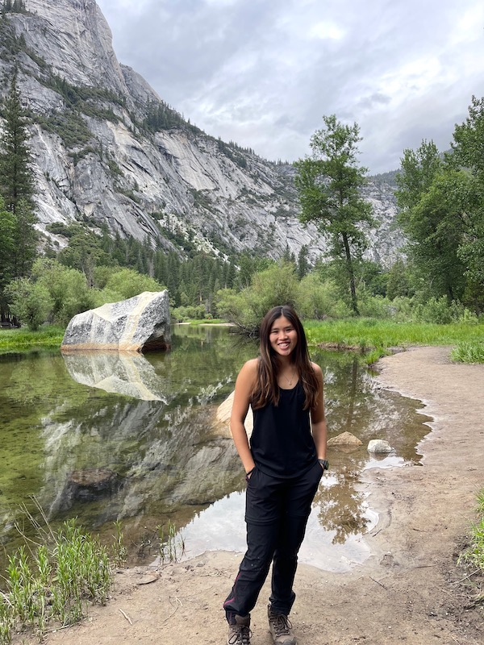

|  | Stacia LOONG Wei YinResearch AssistantTropical Marine Science InstituteEmail: e0318576(AT)u.nus.edu |
Bio
Animals have always been my passion and to work in the scene of conservation, particularly marine conservation, has always been something I aspired to do. Everything about marine conservation excites me and I am always interested to do and explore more in the scene.
Research Interests
Marine biodiversity & conservation, reef ecology, fish ecology
Current Projects
(1) Environmental impacts of aquaculture activities over multiple timescales
In this project, we will be investigating the impact of sea cages on the surrounding benthic and fish communities. This also includes monitoring various abiotic and biotic environmental parameters at distinct time intervals that capture the course of aquaculture activities at sea-based farms, including fish stocking, feeding and longer-term changes in stock density.
(2) Comprehensive Reef Biodiversity Survey analysis
Over a period of four years (2019-2022), the benthic, macroinvertebrate, and fish community structures were recorded at four locations south of Singapore: (1) Pulau Hantu, (2) Pulau Semakau, (3) Raffles Lighthouse and (4) Kusu Island. Using the 4-years long data set, I will analyze the temporal and spatial variability of community structures within and across the four locations in Singapore.
Academic History
Bachelor of Environmental Studies (Specialisation: Biology), National University of Singapore: 2018–2022
Diploma in Veterinary Technology (Specialisation: Aquaculture), Temasek Polytechnic: 2015-2018